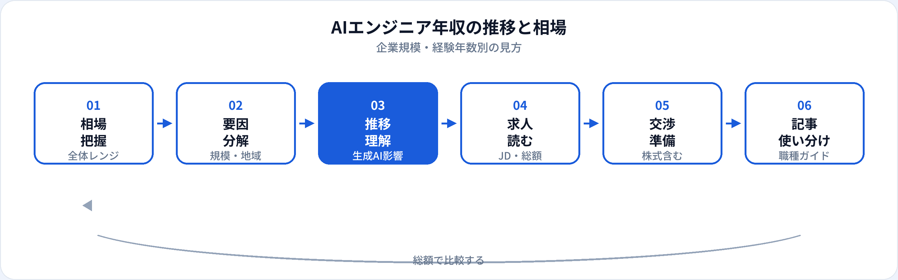

AIエンジニアの年収は、求人サイトの平均値だけでは判断しにくい領域です。経験年数、企業規模、株式報酬、生成AIスキルの有無で幅が大きく、同じ「AIエンジニア」でも実務内容が異なります。本記事は市場・年収カテゴリとして、2026年時点のレンジ、要因の分解、生成AI以降の推移感、オファーの読み方を整理します。仕事内容・スキルはAIエンジニアの職種ガイドを参照してください。
本記事と職種ガイドの使い分け
| 記事 | 主な内容 | いつ読むか |
|---|---|---|
| AIエンジニアとは | 仕事内容・スキル・概算年収・キャリアパス | 職種を検討するとき |
| 本記事（年収の推移と相場） | レンジの要因分解・推移感・オファーの読み方 | 転職・交渉・市場感を掴みたいとき |
| AI関連職の将来性2026 | 職種全体の需給・持続スキル | 将来性と年収をセットで考えるとき |
| 海外のAIエンジニア年収 | 米国・欧州比較、リモート、総額の見方 | グローバル採用・海外オファーを検討するとき |
2026年時点の年収レンジ
日本国内のAIエンジニアについて、当サイトではおおむね500万〜1,200万円を目安レンジとして整理しています（2026年6月時点の一般的な相場感。個別のオファーは企業・職位により異なります）。
この数字は固定給中心の正社員を想定した幅です。ストックオプション（SO）や成果報酬が大きいスタートアップ、外資系では、固定給だけでは見えない総額になることがあります。
経験年数別の目安
| 区分 | 年収の目安（日本・一般論） | 補足 |
|---|---|---|
| ジュニア（実務1〜3年） | 500万〜700万円前後 | 未経験可枠・実装補助から入るケース |
| ミドル（3〜7年） | 700万〜1,000万円前後 | 設計〜運用を一人称で回せると上振れしやすい |
| シニア・リード | 1,000万〜1,200万円以上 | 技術選定・チーム牽引。SOあり企業ではさらに幅 |
「AI実務年数」と「エンジニア全体の年数」は一致しないことがあります。SIerからの転職などはSIer・SESからスタートアップへも参照してください。
企業規模・業態別の傾向
| 業態 | 年収の傾向 | 注意点 |
|---|---|---|
| 大手IT・メガベンチ | レンジは安定。初年度は中位になりやすい | AI専任かどうかはJD要確認 |
| AIスタートアップ | 固定給は中位〜高位、SOで総額が変動 | フェーズ・資金繰りを確認 |
| 外資系 | 同経験で高位になりやすい傾向 | 英語・グローバル協業が前提のことも |
| 事業会社のDX部門 | 同社内他職種と比較して高位のことも | AI実装比率はチームによる |
| SIer・受託 | 客先単価次第。AI案件でも幅が大きい | 常駐と自社プロダクトで異なる |
地域・リモートの影響
東京圏集中の求人が多く、地方勤務でもリモート可の全国採用で同レンジが提示されるケースがあります。一方、地方オフィス勤務必須の場合は、同企業内でも地域手当やレンジが異なることがあります。
フルリモートで海外企業に雇用される場合は、日本の相場とは別軸になります。米国・欧州との比較は海外のAIエンジニア年収と日本の違いを参照してください。
生成AI普及以降の推移感
2023年以降のLLMブームで、LLM・RAG・評価を実装できるエンジニアへの提示額が高めになる傾向が続いています（2026年6月時点）。一方で、ツール利用のみのポジションや、データラベリング中心の「AI」求人は、レンジの下位に集まりやすいです。
中長期では、実装・運用・ガバナンスを担える人材への需要は将来性の整理と同様に残りやすく、スキルの深さが年収差を広げる方向に動いています。
年収を左右するスキル・要素
生成AI実装
RAG、エージェント、評価パイプライン。2026年時点で加点されやすい。
本番運用・MLOps
監視、再学習、コスト最適化。MLOpsスキルは高位帯と相性◎。
クラウド・インフラ
AWS/GCP上の推論基盤。スケールするサービスで重視。
ドメイン知識
金融・製造など。業界特化SaaSで差別化。
求人票・オファーの読み方
-
固定給と総額を分ける
「年収800万」と「固定600万＋SO」のではリスクが異なる。SOの条件・希釈を確認。
-
レンジ表記の意味
「500万〜900万」は上限はシニア想定。入社時はレンジ下限〜中央が現実的なことが多い。
-
JDの実務内容
学習・推論・運用のどこが中心か。ラベリングのみなら相場の下位もあり得る。
-
未経験可の表記
初年度はレンジ下限付近から。成長余地はあるが初年度から上限は期待しにくい。
相場把握の流れ

よくある質問
AIエンジニアの年収相場はいくら？
日本ではおおむね500万〜1,200万円前後が目安となることが多いです（2026年6月時点）。企業・経験で大きく変わります。
生成AIで年収は上がった？
LLM・RAGを扱えるエンジニアには高めの提示が続く傾向があります。職種名だけ「AI」では差が大きいです。
未経験のAIエンジニアの年収は？
ジュニア枠は500万円前後からが多いです。学習ロードマップで準備を進めましょう。
職種ガイドの年収とこの記事の違いは？
職種ガイドは仕事と概算年収を一体で解説。本記事は年収の要因・推移・読み方に特化しています。
他職種の年収は？
生成AIエンジニア、データサイエンティストなど各職種ガイドに目安を記載しています。